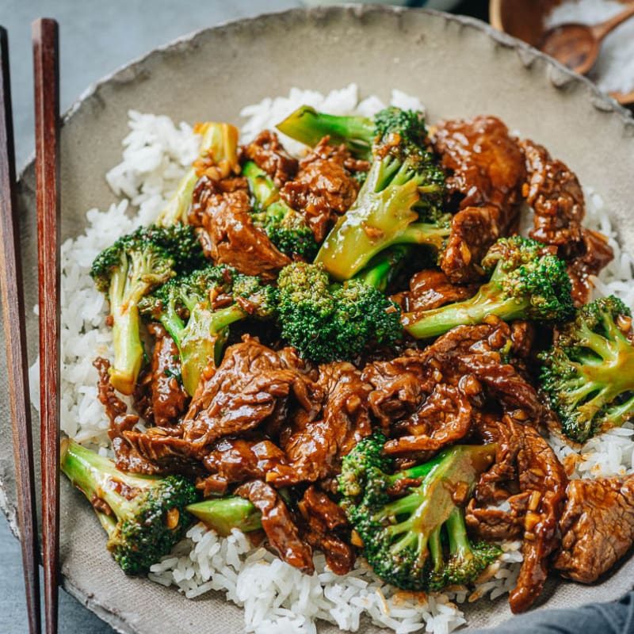

This beef and broccoli is a popular Chinese take-out meal and it’s also easy enough to make at home. It’s also healthier than most take-out meal options. With juicy tender beef and crisp broccoli brought together in a rich brown sauce, this quick dinner is as colorful as it is delicious. Serve it over hot rice for an authentic Chinese take-out dinner.
- ¼ cup all-purpose flour
- 1 (10.5 ounce) can beef broth
- 2 tablespoons white sugar
- 2 tablespoons soy sauce
- 1 pound boneless round steak, cut into bite size pieces
- ¼ teaspoon chopped fresh ginger root
- 1 clove garlic, minced
- 4 cups chopped fresh broccoli
- In a small bowl, combine flour, broth, sugar, and soy sauce. Stir until sugar and flour are dissolved.
- In a large skillet or wok over high heat, cook and stir beef 2 to 4 minutes, or until browned. Stir in broth mixture, ginger, garlic, and broccoli. Bring to a boil, then reduce heat. Simmer 5 to 10 minutes, or until sauce thickens.